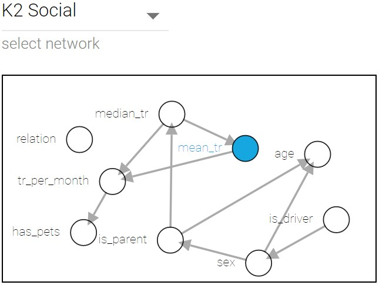
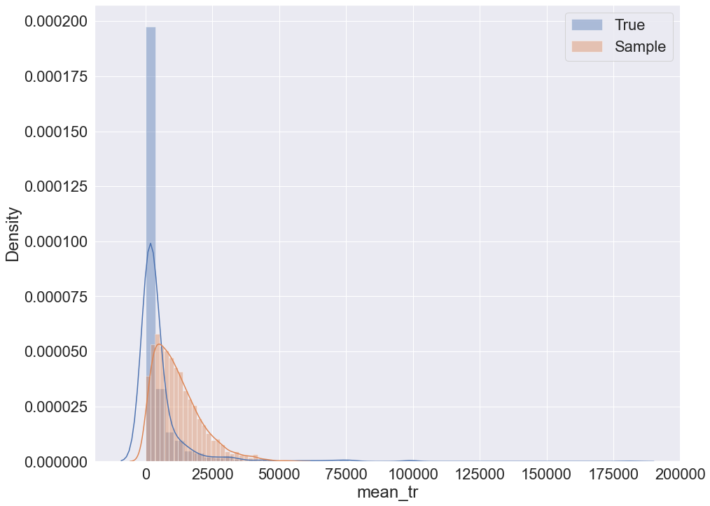
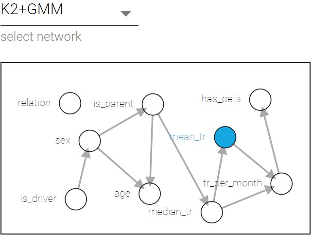
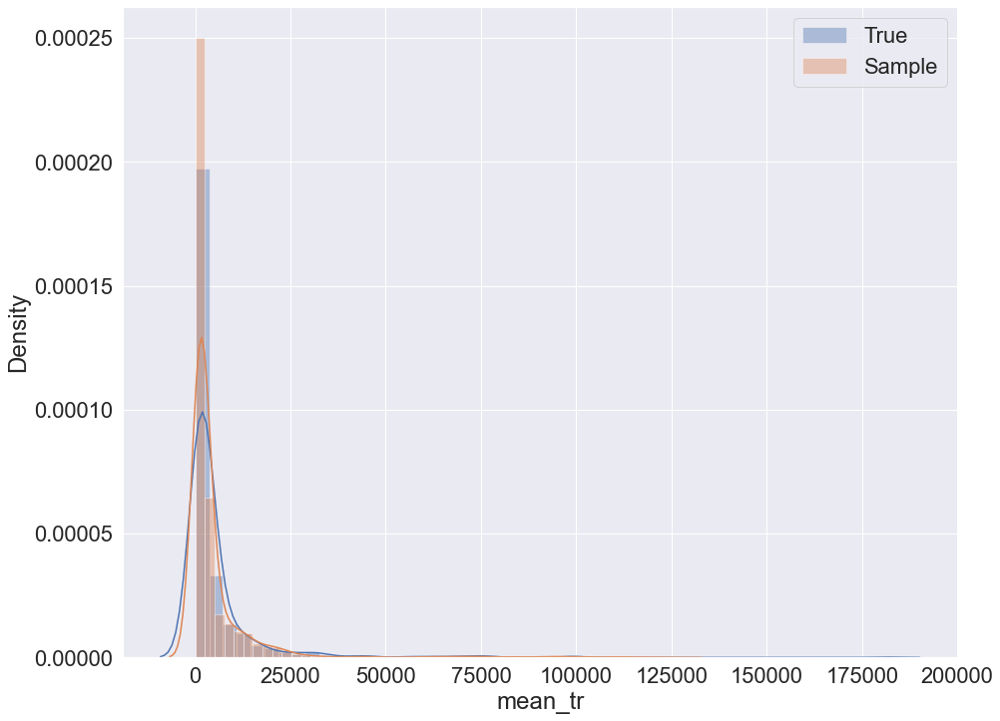
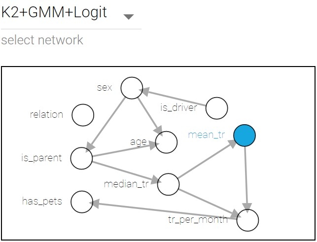
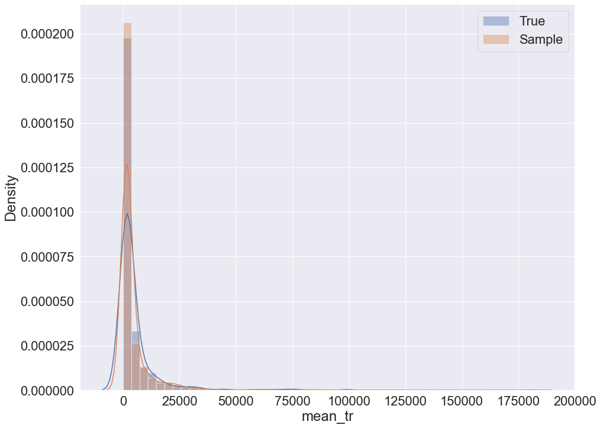
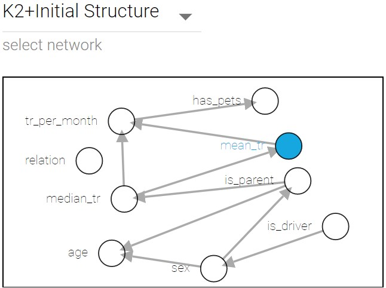

Examples
Example methodology description
Both examples consider the following combinations of hyperparameters used for Bayesian network learning:
K2 metric;
K2 metric with gaussian mixtures (GMM);
K2 metric with GMM and logit nodes;
K2 with initial structure.
All the examples are executed using cross-validation, the data is preproccesed as follows:
data.dropna(inplace=True)
data.reset_index(inplace=True, drop=True)
encoder = preprocessing.LabelEncoder()
discretizer = preprocessing.KBinsDiscretizer(n_bins=5, encode='ordinal', strategy='quantile')
p = pp.Preprocessor([('encoder', encoder), ('discretizer', discretizer)])
discretized_data, est = p.apply(train)
Geological data example
Data Description
The data set contains 9 variables with 442 samples. The target variable for prediction in the following example is ‘Depth’. The variable is also used to visually evaluate sampling quality via distribution plot.
Sampling and corresponding network structure
K2 metric sampling example
To sample using K2 metric the following code can be used:
train, validation = train_test_split(data, test_size=0.1)
bn = Nets.HybridBN(has_logit=False, use_mixture=False)
bn.add_nodes(info)
bn.add_edges(discretized_data, scoring_function=('K2',K2Score))
bn.fit_parameters(train)
# prediction
val_pred = bn.predict(validation.iloc[:,:8], 5)
# sampling
sample = bn.sample(5000, parall_count=5)
{kind=link}
Sampling with K2 + GMM example
To sample using K2 with GMM the following code can be used:
train, validation = train_test_split(data, test_size=0.1)
bn = Nets.HybridBN(has_logit=False, use_mixture=True)
bn.add_nodes(info)
bn.add_edges(discretized_data, scoring_function=('K2',K2Score))
bn.fit_parameters(train)
# prediction
val_pred = bn.predict(validation.iloc[:,:8], 5)
# sampling
sample = bn.sample(5000, parall_count=5)
{kind=link}
Sampling with K2 + GMM + logit nodes example
To sample using K2 with GMM and logit nodes the following code can be used:
train, validation = train_test_split(data, test_size=0.1)
bn = Nets.HybridBN(has_logit=True, use_mixture=True)
bn.add_nodes(info)
bn.add_edges(discretized_data, scoring_function=('K2',K2Score))
bn.fit_parameters(train)
# prediction
val_pred = bn.predict(validation.iloc[:,:8], 5)
# sampling
sample = bn.sample(5000, parall_count=5)
{kind=link}
K2 with initial structure sampling
To sample using K2 and initial structure the following code can be used:
params = {'init_nodes': ['Tectonic regime', 'Period', 'Lithology', 'Structural setting', 'Gross','Netpay', 'Porosity','Permeability', 'Depth'],
'init_edges':[('Period', 'Permeability'), ('Structural setting', 'Netpay'), ('Gross', 'Permeability')],}
train, validation = train_test_split(data, test_size=0.1)
bn = Nets.HybridBN(has_logit=True, use_mixture=True)
bn.add_nodes(info)
bn.add_edges(discretized_data, scoring_function=('K2',K2Score), params=params)
bn.fit_parameters(train)
# prediction
val_pred = bn.predict(validation.iloc[:,:8], 5)
# sampling
sample = bn.sample(5000, parall_count=5)
{kind=link}
Prediction MSE table for both examples
Hyperparameters combinations |
Geological data MSE |
Social data MSE |
|---|---|---|
K2 |
1014.59 |
6066.5 |
K2 + GMM |
974.35 |
5149.5 |
K2 + GMM + logit |
1018.84 |
6657.93 |
K2 + initial structure |
1056.06 |
12506.47 |
Social data example
Data Description
The second example is similar to the previous one, but carried out on different data set. Social data set consists of 30000 anonymous bank records with 9 variables each, bayesian networks were learnt on a sample with 2000 records. The target variable is ‘mean_tr’ which is mean transaction of client.
Sampling
The code used to sample from social data set is identical to the geological dataset.
K2 metric sampling example
 Sampling with K2 + GMM example
 Sampling with K2 + GMM + logit nodes example
 K2 with initial structure sampling
